EasyTrainer 使用教程
1. 软件概览
EasyTrainer 是一款基于 RF-DETR（检测/分割）与 torchvision ResNet（分类）的桌面训练工具。
主界面采用三栏布局：
- 左侧项目树：项目与数据集层级展示
- 中间图像区：缩略图分页浏览、当前图像标注展示
- 顶部工具栏：常用操作按钮（缩略图切换、编辑、删除、导入、导出、属性、训练、模型、日志）
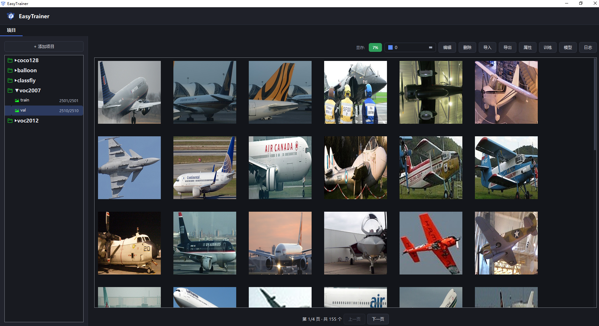
EasyTrainer 主界面
2. 项目管理
2.1 添加项目
点击左侧 + 添加项目 按钮，弹出输入框，输入项目名称后确定。
项目是数据集的容器，所有数据集必须归属于某个项目。
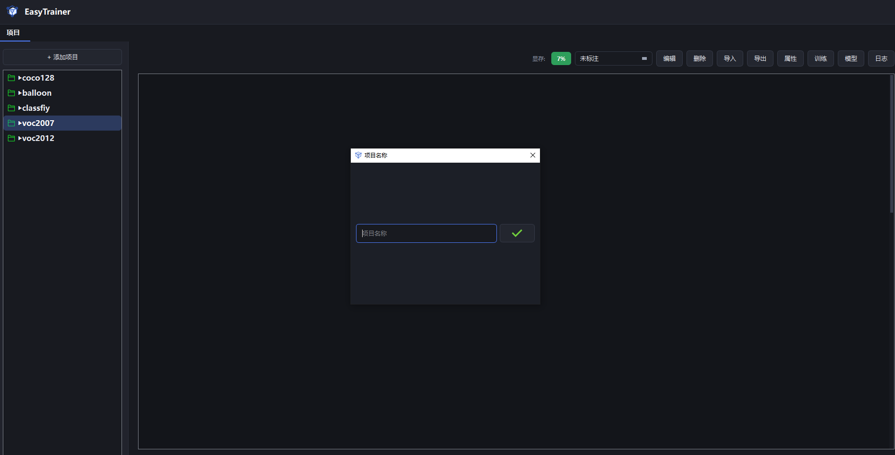
输入项目名称
2.2 添加 / 修改 / 删除数据集
右键左侧项目节点（或项目下任意位置）弹出操作菜单，可以：
- 添加数据集：在项目下新建一个数据集
- 修改名称：重命名数据集
- 删除数据集：连同数据集标注、训练记录一并清除
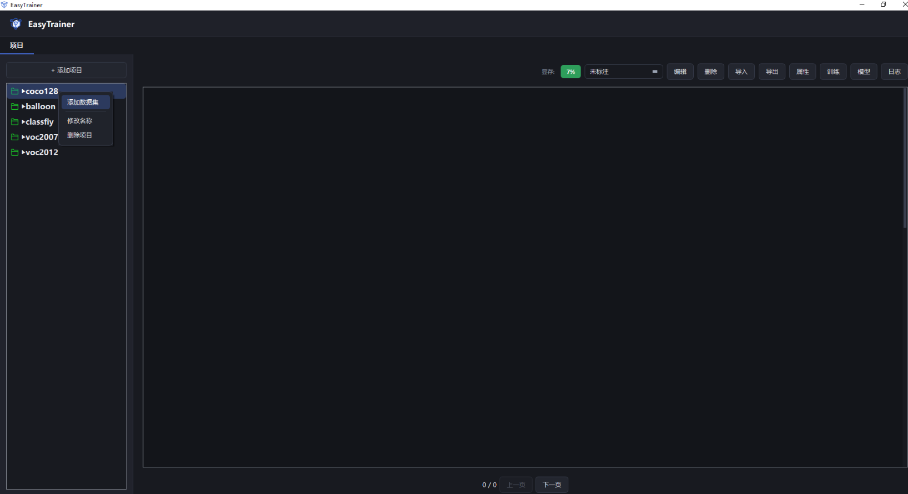
数据集右键菜单
2.3 导入数据
选中数据集后，点击顶部 导入 按钮，弹出"导入数据"对话框：
- 图像路径：选择图片所在文件夹
- 标签路径：选择标注文件所在文件夹
- 标签格式：YOLO txt / Labelme json / 按文件夹分类导入
分类数据集选择"按文件夹分类导入"：每个子文件夹名作为一个类别，无需标注文件。
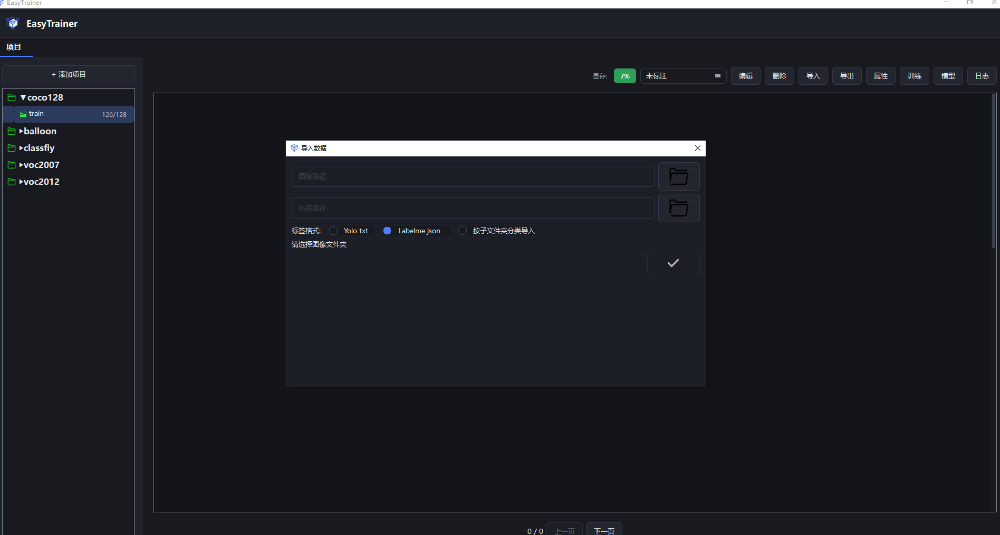
导入数据对话框
2.4 数据集属性
选中数据集后点击顶部 属性 按钮，查看：
- 图像路径 / 标签路径
- 标签分布柱状图：每个类别的已标注图像数
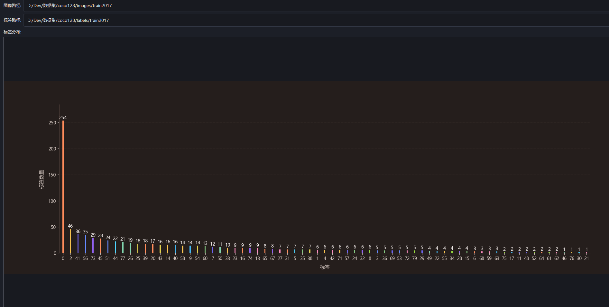
数据集属性与标签分布
3. 标签管理
3.1 添加或导入标签
在标注界面右侧标签列表上方点击 添加标签，可以：
- 从已有数据集导入标签（点击"导入"选择数据集路径）
- 从预设色板选色，或点击"自定义"挑颜色
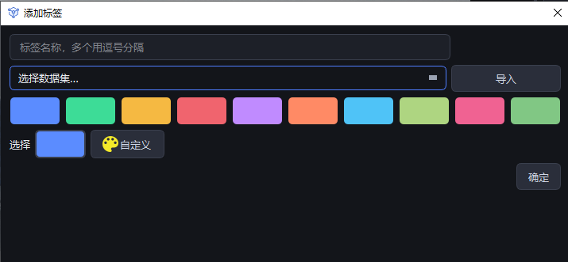
添加或导入标签
3.2 批量修改类别
选中数据集后，在图像区缩略图上右键，选择"批量修改类别"，可把某标签批量改名为另一个：
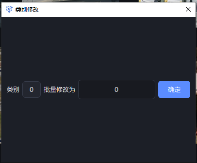
类别批量修改弹窗
3.3 修改单个类别
标注界面右侧标签列表，每个标签 chip 上右键可重命名 / 改颜色 / 删除。
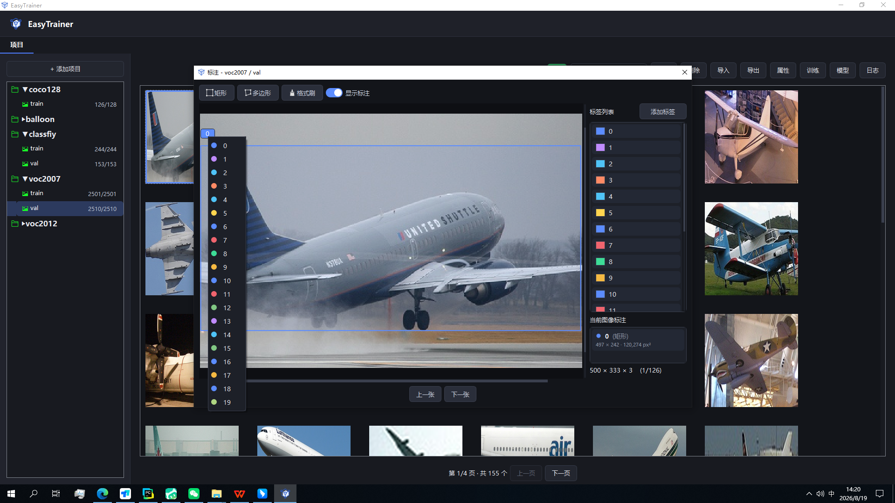
标签右键菜单（标注界面）
4. 图像标注
4.1 进入标注界面
在左侧树选中具体数据集后，右键缩略图选择"标注"，或直接双击缩略图，进入标注界面。
4.2 标注工具
标注界面顶部工具栏提供三种标注方式：
- 矩形：拖拽鼠标画矩形框
- 多边形：依次点击点出多边形顶点，双击或回车结束
- 格式刷：点击已有标注，可把它的类别快速应用到其他位置
右侧标签列表选择类别，颜色随机；勾选"显示标注"可隐藏所有框以看原图。
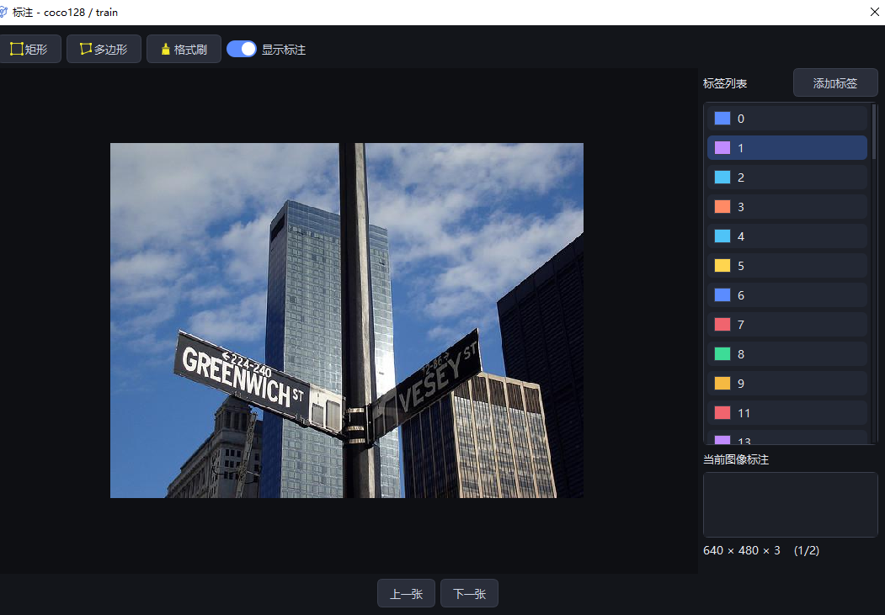
矩形 / 多边形 / 格式刷三种标注工具
4.3 按标注类别分类筛选
顶部工具栏的类别筛选下拉框，选择某类别后图像区只显示含该类别的图。
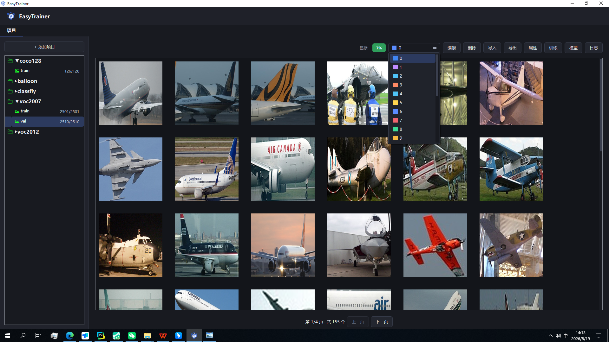
按类别筛选缩略图
5. 训练
5.1 训练参数配置
点击首页或模型界面的训练按钮，弹出训练参数配置：
- 任务类型：检测 / 分割 / 分类（按数据集格式自动联动）
- 训练集 / 验证集：多选数据集，可跨项目组合
- 网络：nano / small / medium / large
- 设备：cuda:0（自动列出可用 GPU）
- 优化器：按任务推荐（检测/分割=adamw、分类=sgd）
- 图像尺寸：检测 640 / 分割 636 / 分类 224（按任务自动）
- 早停：连续 N 个 epoch 精度无提升则停（0=禁用）
- 批次 / 梯度累积 / 轮次 / 线程数 / 学习率
- 输出路径：点"选择路径"挑选目录，鼠标悬停看完整路径
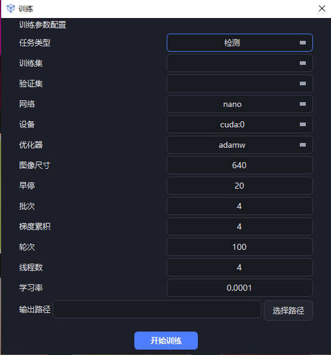
训练参数配置对话框
5.2 训练进度监控
点击"开始训练"后回到首页，顶部出现进度条与控制条：
- 任务名 + 进度：如 "coco128 训练中 5/100"
- 当前 map：验证集最新精度
- 停止训练：随时终止（模型会保存已完成的部分）
- 剩余时间：按已用时长外推估算
- 显存用量：实时显示 GPU 显存
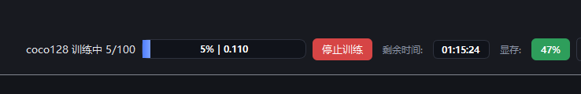
训练进度条与状态栏
5.3 训练指标查看
训练结束后，在模型列表点击对应行的指标按钮，弹出训练曲线窗口：
- 上半图：val loss 曲线
- 下半图：mAP@50-95 / mAP@50 / AR / F1 / 准确率 / 召回率 等多条曲线
- 下拉筛选"全部指标"或某具体类别，查看 per-class 曲线
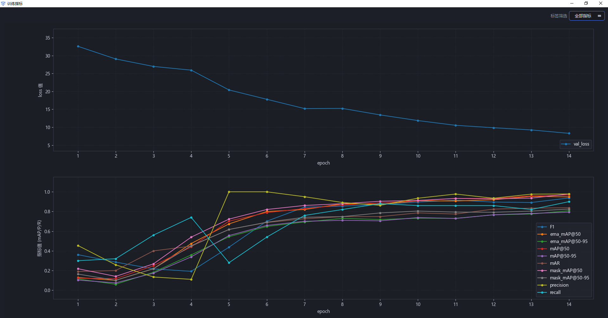
训练指标曲线（val loss + 各类 mAP）
6. 模型管理
点击首页/顶部 模型 按钮，打开模型管理窗口，显示所有已完成训练：
- 开始/完成时间、耗时、模型大小（nano/small/...）
- 模型类型（检测/分割/分类）、模型精度
- 图像尺寸、模型路径、数据集信息（训练集/验证集）
- 行尾按钮：导出 / 指标 / 删除 / 测试 / 训练
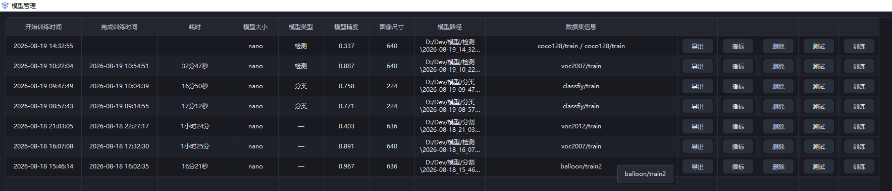
模型管理列表
"训练"按钮：点它会用该条记录的参数（任务类型/数据集/图像尺寸/学习率/优化器等）打开训练窗口，等于基于此记录再来一次。
7. 测试 / 评估
7.1 测试参数设置
点击模型行的 测试 按钮，弹出测试参数对话框：
- 数据：跨项目所有数据集可选
- 设备：默认 cuda:0
- 模型：自动锁定该行模型
- 置信度 / IoU 阈值（检测/分割）、输出标签文件（推理模式勾上会写出预测 json）
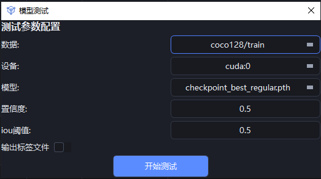
测试参数配置
7.2 测试结果分析
测试完成后弹出"测试结果分析"窗口：
- 顶部：测试张数 / 正确检出(检出率) / 漏检 / 误检 / 准确率（用"正确检出/漏检/误检"代替 TP/FN/FP）
- 中部：按类别表格——每类标注数 / 正确检出 / 漏检 / 误检 / 检出率 / 准确率
- 底部：一句直白结论（"漏检偏多/误检偏多"+ 拖累最大的类别）
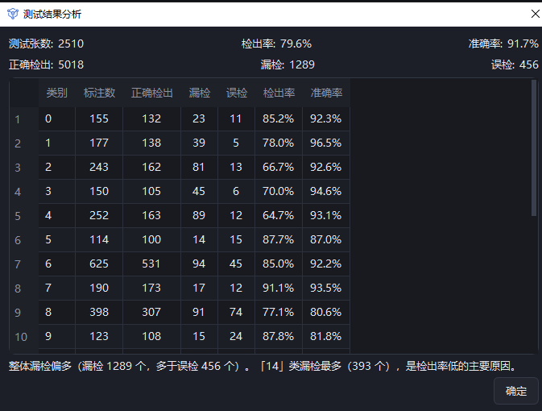
测试结果分析对话框
8. 日志
点击首页顶部 日志 按钮，打开日志窗口，实时显示：
- 软件启动/退出
- 项目/数据集创建/重命名/删除/移动
- 数据集导入/导出
- 标签创建/重命名/删除
- 训练开始 / 训练中（[train] 前缀转发子进程）/ 指标更新 / 模型保存 / 手动停止
- 测试启动 / 测试中（[test] 前缀）/ 完成 / 失败
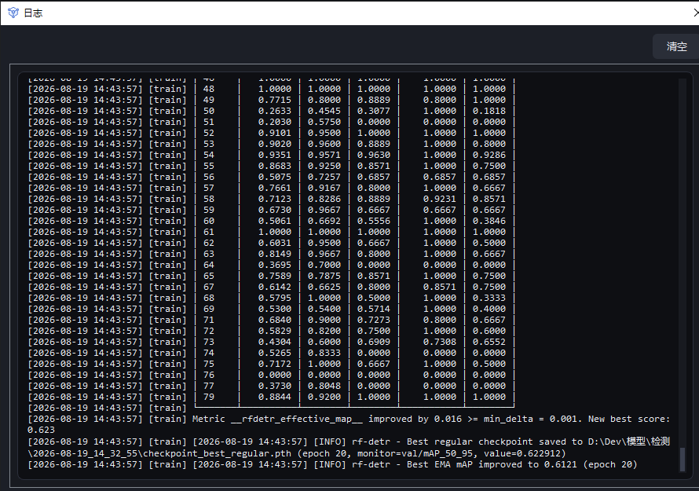
日志窗口